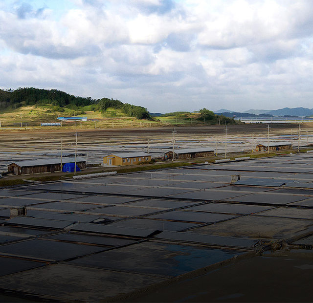
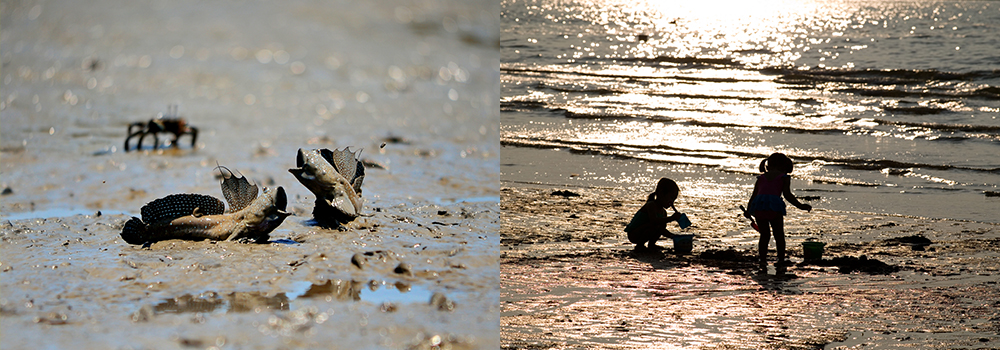
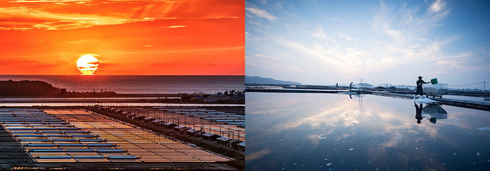
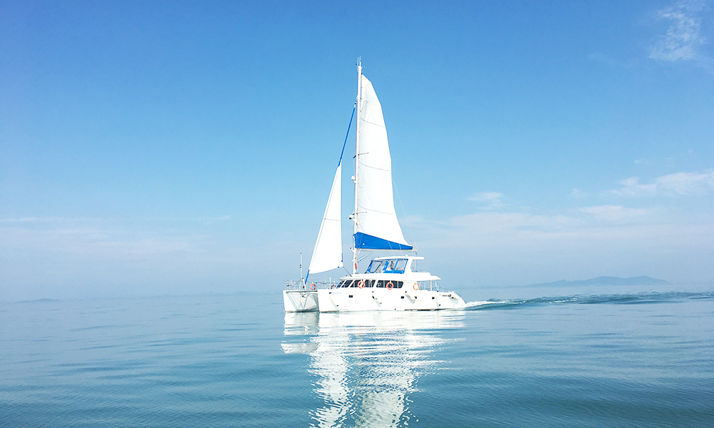

와 제 롤모델이 잡스에요!!! 아이폰 첫 출시되고 나서부터 계속 아이폰 쓰고 있는데 잡스가 너무 그리워요ㅠㅠ 지금은 돈만 벌려고 하는 것 같아서 디자인 발전도 없고ㅠㅠ와 제 롤모델이 잡스에요!!! 아이폰 첫 출시되고 나서부터 계속 아이폰 쓰고 있는데 잡스가 너무 그리워요ㅠㅠ 지금은 돈만 벌려고 하는 것 같아서 디자인 발전도 없고ㅠㅠ와 제 롤모델이 잡스에요!!! 아이폰 첫 출시되고 나서부터 계속 아이폰 쓰고 있는데 잡스가 너무 그리워요ㅠㅠ 지금은 돈만 벌려고 하는 것 같아서 디자인 발전도 없고ㅠㅠ와 제 롤모델이 잡스에요!!! 아이폰 첫 출시되고 나서부터 계속 아이폰 쓰고 있는데 잡스가 너무 그리워요ㅠㅠ 지금은 돈만 벌려고 하는 것 같아서 디자인 발전도 없고ㅠㅠ와 제 롤모델이 잡스에요!!! 아이폰 첫 출시되고 나서부터 계속 아이폰 쓰고 있는데 잡스가 너무 그리워요ㅠㅠ 지금은 돈만 벌려고 하는 것 같아서 디자인 발전도 없고ㅠㅠ
여행에 빠지다

12월에 떠나기 좋은 국내 여행지 추천
섬의 왕국 신안군
우리나라에서 선거에 입후보한 정치인들이 유세를 다니기 가장 힘든 지역은 어디일까?
강원도의 태백준령 산골도 힘들 테지만 그보다 더욱더 힘든 곳은 우리나라 서남단에
위치한 신안군이다. 그 이유는 서울시 면적의 22배나 되는 1만 3,308㎢의 해역 면적에
1,025개(유인도 72개, 무인도 953개)의 섬으로 이뤄진 지자체이기 때문이다.
이 중 섬과 육지 면적 655㎢를 제외한 바다 면적은 1만2,654㎢로 전라남도 전체 면적과
비슷해 군 단위 지자체로는 가장 광활한 지역을 관할하고 있는 곳이다.
글
우현석 (서울경제신문 객원기자 겸 여행 작가)
사진
신안군청 제공
-
관할 해역이 넓은 만큼 신안군은 해양자원 천국이라고 할 수 있다. 또, 국내 최대의 갯벌과 전국 천일염의 70%를 생산하는 넓은 염전 등 풍부한 자원과 사시사철 아름다운 풍광까지 지닌 신안은 관광의 천국이다. 이 곳에서 가볼 만한 곳을 꼽으라면 단연, 섬과 갯벌을 내세울 수 있다. 신안 갯벌은 캐나다 동부해안, 미국 동부해안, 유럽 북해 연안, 아마존강 유역과 더불어 세계 5대 갯벌로 꼽히기 때문이다. 실제로 신안 갯벌은 전국 갯벌의 15%인 378㎢를 차지하는 동시에, 전남 갯벌 면적의 38%를 차지하고 있다. 신안군은 이 같은 환경을 보존하기 위해 갯벌 144㎢를 도립공원으로 지정하고 있으며, 이 지역은 유네스코 다도해 생물권 보존지역으로 지정되기도 했다.
신안 하면 빼놓을 수 없는 것이 바로 소금이다. 소금이 유명한 만큼 그것을 생산해내는 염전의 규모 또한 상당하다. 신안군에 염전이 밀집한 이유는 복잡한 해안선이 많은 리아스식 해안에 바다로 흘러드는 강과 하천이 갯벌을 만들어 놓았기 때문. 간척사업으로 그 면적은 감소하긴 했지만 이제 갯벌은 생태계를 유지하는 소중한 자산으로 그 가치를 인정받고 있다.
이처럼 소중한 갯벌은 펄 갯벌과 모래 갯벌, 혼합 갯벌로 구분된다. 위치에 따라 해변 갯벌과 하구 갯벌로 구분하기도 한다. 해안에서는 모래 갯벌이, 육지에 둘러싸여 있는 곳에서는 펄 갯벌이 발달하는데, 펄에서는 갈대, 칠면초, 천일사초, 갯잔디 등이 군락을 이룬다. 이 중 갈대는 수질을 정화하고 부영양화를 억제하며 철새들의 서식지 역할을 하기도 한다.
-

증도 갯벌
신안군 증도 갯벌에 염전이 생긴 것은 53년 전으로 징검다리를 건너다니던 전(前)증도와 후(後)증도 사이 갯벌에 둑을 쌓아 염전을 조성한 것이다.
짱뚱어다리
썰물 때 갯벌 위로 짱뚱어가 뛰어다닌다고 해서 붙여진 짱뚱어다리
신안군 증도 갯벌에 염전이 생긴 것은 53년 전으로 징검다리를 건너다니던 전(前) 증도와 후(後) 증도 사이 갯벌에 둑을 쌓아 염전을 조성한 것이다. 신안군 증도의 2.6㎢나 되는 광활한 태평염전은 단일 염전으로는 그 규모와 생산량에 있어 국내 최대를 자랑한다. 이곳 태평염전은 무공해 천일염을 연간 4,000톤씩 생산하는데 그 품질을 인정받고 있다.
신안군 증도가 내세우는 또 다른 자랑거리는 슬로시티와 람사르 습지, 유네스코생물보전지역 등이다. 신안군 관계자는 “2008년 갯벌도립공원으로 지정된 이듬해인 2009년, 유네스코생물권보전지역으로 지정됐고, 2010년에는 10번째 국가습지보호지역으로 지정됐다”며 “이어 2011년에는 람사르 습지로 지정되는 등 경사가 겹쳤다”고 말했다.
-

태평염전
우리나라 최대의 소금 생산지, 전국 단일염전으로는 최대의 크기(462만㎡)의 단일염전으로 국내 최대의 생산량을 자랑하며 특히 청정 무공해지역에서 청정해수로 깨끗하고, 건강한 미네랄이 풍부한 상태 그대로 천일염을 생산하는 천연 염전이다.
증도의 아이콘은 뭐니 뭐니 해도 이 광활한 염전에서 생산되는 소금이다. 바닷물을 저수지에 가둬서 증발지로 보낸 다음, 소금을 포화한 짠물을 결정지로 보내 채염을 하고, 수분을 빼내 보관한 후 포장해서 판매하기까지 짧게는 25일에서 길게는 29일이 걸린다. 같은 기간 태양과 바람의 도움이 필수적인 것은 두말할 필요가 없다.
증도의 상징 태평염전은 원래 국가 소유였다. 53년 전 염전을 조성한 이후 민영화되어 ‘대평염업’이라는 간판을 걸고 운영되던 중 경영이 악화하자 故손말철 회장이 이를 인수, 태평염전(근대문화유산 360호)으로 간판을 바꿔 달았다. 그 후 손 회장은 불과 2년 만에 여의도 면적의 2배에 달하는 140만 평의 염전을 일궈냈다. 태평염전에서는 소금생산 체험도 해볼 수 있는데, 이는 수확 철인 3~10월 중순 사이에만 가능하다.
신안군에 간다면 요트 체험도 즐겨볼 만하다. 요트는 신안군이 직접 운영하는 것으로 선체 가격이 16억 원을 호가한다. 요트 체험은 ‘요트 투어’와 ‘요트 스테이’로 나뉘는데 요트 투어의 경우 오전 10시와 오후 2시, 하루 2회로 운항하며 최소 인원 10명 이상이 돼야 운항할 수 있다. 요금은 성인 3만2천 원, 단체 2만6천 원 선이다.
-

요트 체험
요트 체험은 ‘요트 투어’와 ‘요트 스테이’로 나뉘며, 요트는 신안군이 직접 운영하는 것으로 선체 가격이 16억 원을 호가한다.
요트에서 하룻밤 묶을 수 있는 요트 스테이는 오후 3시부터 다음날 오전 10시까지이며, 인원은 10명 이하로 제한된다. 사전 신청할 경우 낚싯대를 받아 바다낚시를 즐길 수도 있다. 요금은 주중 35만 원, 주말 42만 원으로 다소 부담스러운 가격이지만, 10명의 인원이 고급요트에서 하룻밤을 지낼 수 있다는 것을 생각하면 저렴한 편이다.
TIP서울에서 가는 방법
-

 SRT SRT수서역 → 목포역(130번 버스탑승) → 압해도 상장천정류장 (약 3시간 10분 소요)
SRT SRT수서역 → 목포역(130번 버스탑승) → 압해도 상장천정류장 (약 3시간 10분 소요) -
 승용차 경부고속도로 → 논산천안고속도로 → 당진영덕고속도로 → 서천공주고속도로 →
승용차 경부고속도로 → 논산천안고속도로 → 당진영덕고속도로 → 서천공주고속도로 →
서해안고속도로 → 산정교차로에서 신안방면 → 송공리선착장방면 → 압해도 (약 3시간 40분 소요)
-
최고예요
322
-
좋아요
322
-
슬퍼요
322
-
그저 그래요
322
-
화나요
322